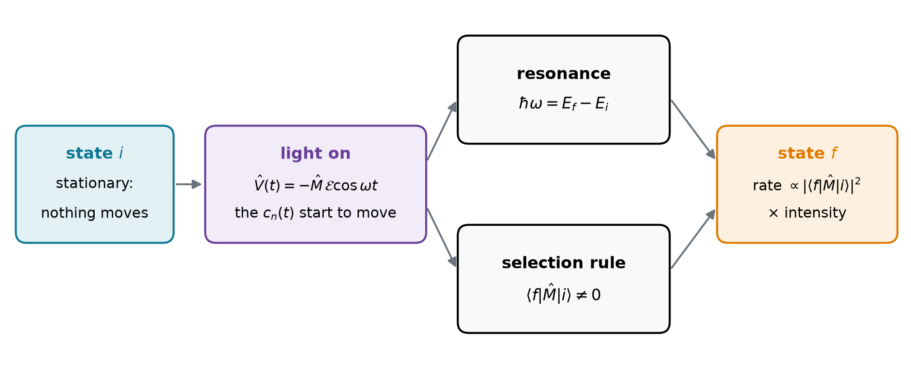
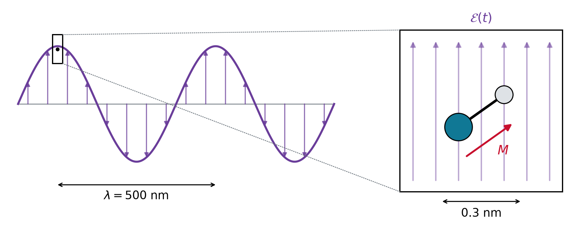
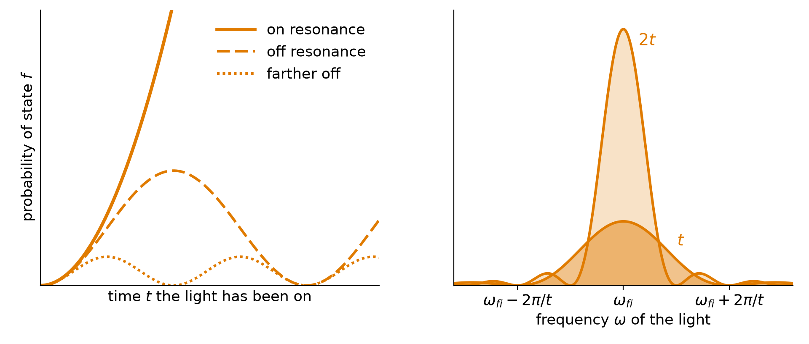
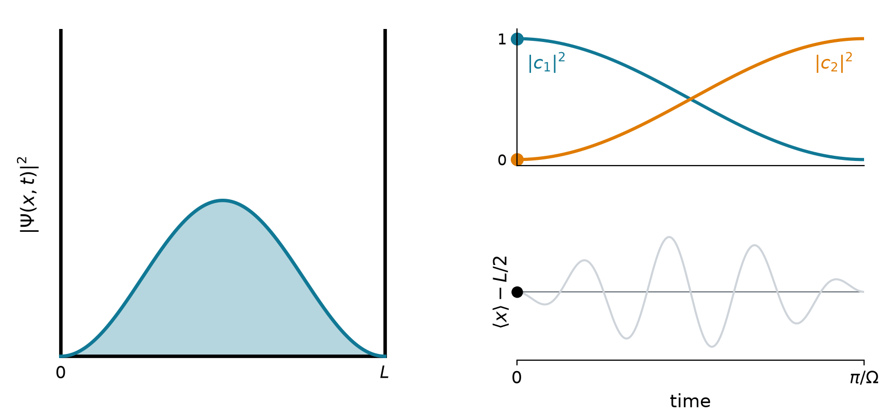
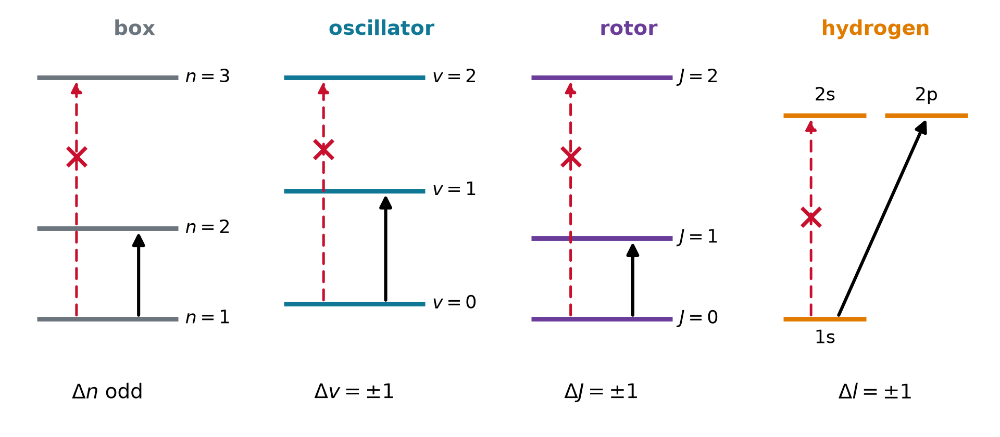

Chem 3240 · Lecture 6.3

A dipole M in a field \mathcal{E} has the energy -M\mathcal{E} (4.3). In light the field oscillates:
\hat{H}(t) = \hat{H}^{(0)} + \hat{V}(t), \qquad \hat{V}(t) = -\hat{M}\,\mathcal{E}\cos\omega t

With a fixed Hamiltonian (3.7), each stationary state keeps its coefficient and turns its phase:
\Psi(t) = \sum_n c_n\,e^{-iE_nt/\hbar}\,\psi_n \qquad (c_n\ \text{constant})
With \hat{V}(t) on, the same expansion holds, but the coefficients depend on time:
\Psi(t) = \sum_n c_n(t)\,e^{-iE_nt/\hbar}\,\psi_n
1. Insert into i\hbar\,\partial\Psi/\partial t = (\hat{H}^{(0)} + \hat{V})\Psi. 2. Cancel the terms with E_n:
\sum_n i\hbar\,\dot{c}_n\,e^{-iE_nt/\hbar}\,\psi_n = \sum_n c_n\,e^{-iE_nt/\hbar}\,\hat{V}\psi_n
3. Project onto one state: multiply by \psi_m^* and integrate
i\hbar\,\frac{dc_m}{dt} = \sum_n V_{mn}(t)\,e^{i\omega_{mn}t}\,c_n
Start in one stationary state, i: c_i(0) = 1, all others zero. A weak perturbation changes the coefficients slowly, so on the right keep their starting values:
i\hbar\,\frac{dc_f}{dt} = V_{fi}(t)\,e^{i\omega_{fi}t}
c_f(t) = -\frac{i}{\hbar}\int_0^t V_{fi}(t')\,e^{i\omega_{fi}t'}\,dt', \qquad P_{i \to f}(t) = |c_f(t)|^2
V_{fi}(t) = -M_{fi}\,\mathcal{E}\cos\omega t, with the transition dipole M_{fi} = \langle f|\hat{M}|i\rangle and \cos\omega t = \frac{1}{2}\left(e^{i\omega t} + e^{-i\omega t}\right):
c_f(t) = \frac{iM_{fi}\,\mathcal{E}}{2\hbar}\int_0^t\left[e^{i(\omega_{fi} + \omega)t'} + e^{i(\omega_{fi} - \omega)t'}\right]dt'
\int_0^t e^{i\delta t'}dt' = \frac{e^{i\delta t} - 1}{i\delta}, \qquad \left|e^{i\delta t} - 1\right|^2 = 4\sin^2\frac{\delta t}{2}
P_{i \to f}(t) = \frac{|M_{fi}|^2\,\mathcal{E}^2}{\hbar^2}\;\frac{\sin^2\!\left[(\omega_{fi} - \omega)\,t/2\right]}{(\omega_{fi} - \omega)^2}, \qquad M_{fi} = \langle f|\hat{M}|i\rangle


Every result today carries the factor |M_{fi}|^2
\text{allowed only if}\qquad M_{fi} = \langle f|\hat{M}|i\rangle = \int\psi_f^*\,\hat{M}\,\psi_i\,d\tau \;\neq\; 0

An electron in a box of length L, with \hat{M} = -ex. Transition dipoles from n = 1 to n = 2 and to n = 3? From 3.7: \langle 2|x|1\rangle = -16L/9\pi^2.
M_{21} = -e\,\langle 2|x|1\rangle = \frac{16}{9\pi^2}\,eL = 0.18\,eL \qquad\text{allowed}
M_{31} = -e\,\langle 3|x|1\rangle = 0 \qquad\text{forbidden}
| variational method | perturbation theory | time-dependent perturbations | |
|---|---|---|---|
| put in | a trial function | a solved problem and a small constant term | a solved problem and a term that depends on time |
| get out | an upper bound to E_0 | shifted levels, mixed states | transitions between levels |
| key integral | \langle\phi\vert\hat{H}\vert\phi\rangle | \langle k\vert\hat{H}^{(1)}\vert n\rangle | \langle f\vert\hat{M}\vert i\rangle |
| condition | lower is better | coupling \ll gap | resonance, \hbar\omega = E_f - E_i |
| two levels | exact roots E_\pm | the roots as a series | driven by light |
Light adds an oscillating term -\hat{M}\mathcal{E}\cos\omega t to the Hamiltonian, and the coefficients of the stationary states begin to move. To first order the amplitude of a new state builds up only at resonance, \hbar\omega = E_f - E_i, with a probability proportional to the intensity and to the square of the transition dipole \langle f|\hat{M}|i\rangle. Where that integral vanishes the transition is forbidden, and every selection rule of the course is a statement about it: \Delta v = \pm1, \Delta J = \pm1, \Delta l = \pm1.
Chem 3240 · Quantum Mechanics